Forex Market Foundation 4 — Basic Computational Methods
The quantitative foundation of forex: quoting, pips, sizing, margin, P&L and carry — and why pros compute everything in percentages, not pips.
Retail traders think a few sums plus charts make a trader. They don't. This chapter builds the mathematical rigour — cross rates, pips vs basis points, trading sizes, margin/leverage/exposure, P&L and carry/rollover — that hedge funds and prop desks take for granted, and shows how the pip-obsessed retail machine masks the true moves in forex.
The gist
- Left-to-right convention: a quote is how much one unit of the LEFT (base) currency buys of the RIGHT (quote) currency — USD/JPY 119.786 means 1 USD buys 119.786 JPY. Cross rate AUD/JPY = USD/JPY × AUD/USD = 93.547.
- Pips are the unit size: majors quote to 4 decimals (1 pip = 0.0001); JPY and INR pairs quote to 3 decimals (1 pip = 0.001). EUR/USD 1.1174→1.1274 = 100 pips.
- Pips MASK the true move. EUR/USD +100 pips = (1.1274−1.1174)/1.1174 = 0.895% (89.5 bp) but USD/INR −100 pips = 0.144% (14.4 bp) — same pips, very different returns. Pros compare on a level playing field: 1% = 100 basis points.
- Trading sizes: 1 Lot = 100,000, 1 Mini Lot = 10,000, 1 Micro Lot = 1,000, 1 Nano Lot = 100 currency pairs. Trading size is the base (left) currency; exposure and P&L are expressed in the quote (right) currency.
- Pip Value = 1 Pip × Trading Size (in quote currency). GBP/USD 1 Lot = 0.0001 × 100,000 = $10/pip; 1 Mini Lot = $1/pip.
- 1% margin requirement = 100× leverage: put up GBP1,000 to control GBP100,000. Leverage does NOT create opportunity — a 60-pip daily-vol pair moves 60 pips whether or not you borrow; borrowing only increases the volatility of your P&L. Volatility, not leverage, is opportunity.
- P&L = Base × (exit − entry), in quote currency: EUR/USD 1 Lot 1.10356→1.12479 = 100,000 × 0.02123 = $2,123 (= €1,887 at 1.12479). USD/JPY 169 pips = 1.40% = $1,400.
- Carry/rollover: you go long a high-yielder (asset, receive deposit rate) and short a low-yielder (liability, pay lending rate). Worked table (deposit 1%/7%, lending 4%/12%) → Long A/Short B = −11%/yr negative carry; Short A/Long B = +3%/yr positive carry. Per 1 Lot daily rollover ≈ −31.89 (long A/B) vs +8.70 (short A/B).
- Real risk is GROSS EXPOSURE, not how much you can borrow. Fund the account well, choose your own exposure, and if the currency pair's volatility over the horizon exceeds your margin-call percentage you can be wiped out.
Why the numbers matter — mathematical rigour, not a few sums
- Forex is entirely numbers-based; opportunity and risk are ultimately read off volatility, so you need a computational foundation to measure them.
- Hedge funds, pension funds and bank prop desks take a fundamentally driven approach and demand this rigour — it is table stakes for a career in the industry.
- Retail traders think a little of this plus technical analysis plus one monthly number (e.g. non-farm payrolls) is a strategy. It isn't: 90% of retail traders lose 90% of their money within 90 days.
- These methods are called 'basic' only because the pros go much further; getting them right gives you confidence and stops panic mistakes when trades inevitably go wrong.
The chapter frames computation as a foundation, not a trading system. Knowing how to work out a P&L or a cross rate is necessary but nowhere near sufficient — it is what a professional calls upon to help make decisions, not the decision itself.
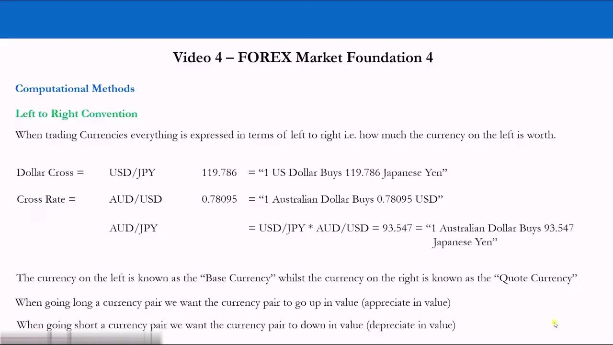
Left-to-right convention: base and quote currency
- Everything is expressed left to right: how much the currency on the LEFT is worth. USD/JPY 119.786 = '1 US Dollar buys 119.786 Japanese Yen'.
- The currency on the left is the BASE currency; the currency on the right is the QUOTE currency.
- Long a pair = you want it to appreciate (go up); short a pair = you want it to depreciate (go down).
- AUD/USD 0.78095 = '1 Australian Dollar buys 0.78095 USD'.
This convention governs every quote, exposure and P&L calculation that follows, so it is worth cementing until it becomes second nature — the base is always the left, the quote always the right.
Cross rates: deriving one pair from two dollar crosses
- AUD/JPY = USD/JPY × AUD/USD = 93.547 — '1 Australian Dollar buys 93.547 Japanese Yen'. When the common currency (USD) is numerator in one and denominator in the other, you MULTIPLY.
- The reciprocal flips the pair: JPY/AUD = 1 ÷ AUD/JPY = 0.010714.
- When the common currency is the DENOMINATOR in both (e.g. USD/SGD and EUR/SGD), you DIVIDE: EUR/USD = EUR/SGD ÷ USD/SGD = 1.088732; reverse USD/EUR = 1 ÷ that = 0.9185.
- The tradable-crosses spreadsheet (from video 2) is a full cross-rate matrix; the homework is to build your own and derive the formulas yourself rather than being spoon-fed.
Cross rates also matter for optimal trade construction: if something is bullish for AUD and bearish for JPY, buying AUD/JPY concentrates the same capital on both views at once, rather than splitting it across a long USD/JPY and a long AUD/USD that partly cancel on the dollar.
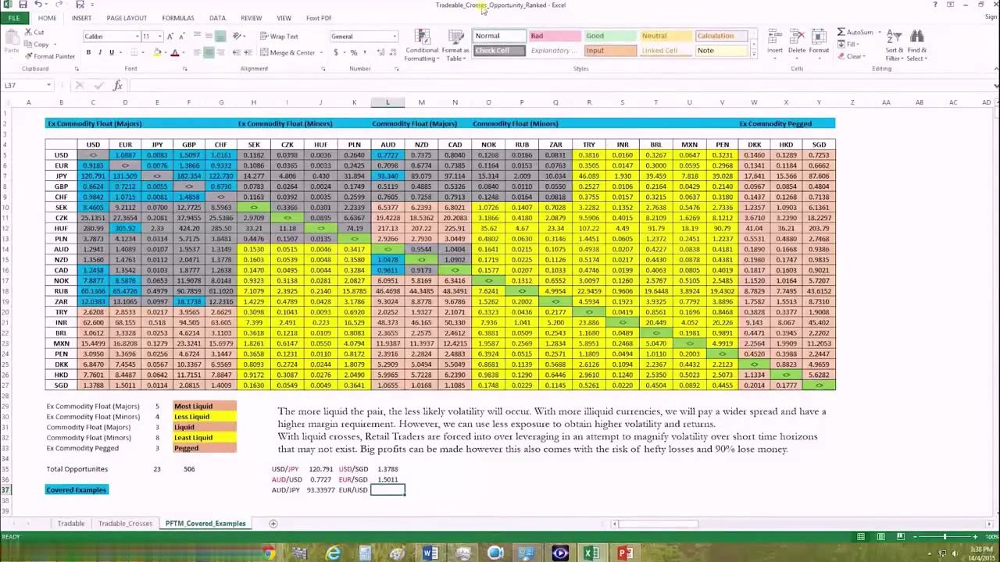
Charts are just a picture of the numbers
- Long USD/JPY: the pair rises from ~101 up through the 110s and peaks ~122 — a long benefits as the pair appreciates.
- Short AUD/USD: the pair falls from ~0.94 down to ~0.77 — a short benefits as the pair depreciates.
- AUD/JPY (the cross): choppy/range-bound, up to ~102, down to ~90, recovering to ~93 — mechanically derived from USD/JPY × AUD/USD.
- Charts and spreadsheets link together: working out the cross rate in a spreadsheet and viewing the chart show the same reality from two angles.
The candlestick charts are a pictorial display of the exact rates just computed — seeing the long, the short and the derived cross side by side reinforces how exchange rates and cross rates connect.
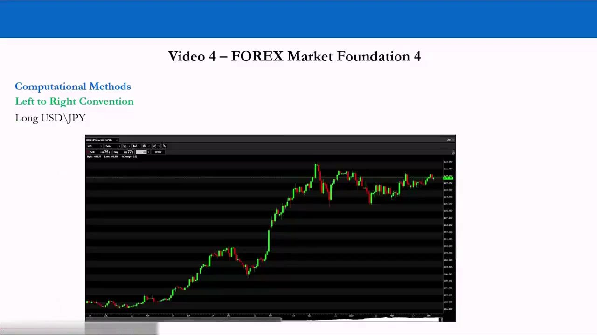
Pips: the unit size of a currency pair
- Currency pairs are expressed in unit sizes called 'pips'. Every tradable pair is quoted to 4 decimal places EXCEPT JPY and INR pairs, which are quoted to 3.
- For majors (4dp), 1 pip = 0.0001. Buy EUR/USD at 1.1174, sell at 1.1274 → 1.1274 − 1.1174 = 0.0100 = 100 pips.
- For JPY and INR crosses (3dp), 1 pip = 0.001, so 100 pips = 0.100. Short EUR/INR at 69.267, buy back at 69.167 → 0.100 = 100 pips.
- Your retail platform shows everything left-to-right and in pip unit sizes — but pips are not a base for comparing pairs.
Pips are the platform's native measurement and you must understand them, but they are only a unit of price movement — not a comparable measure of return across different pairs.
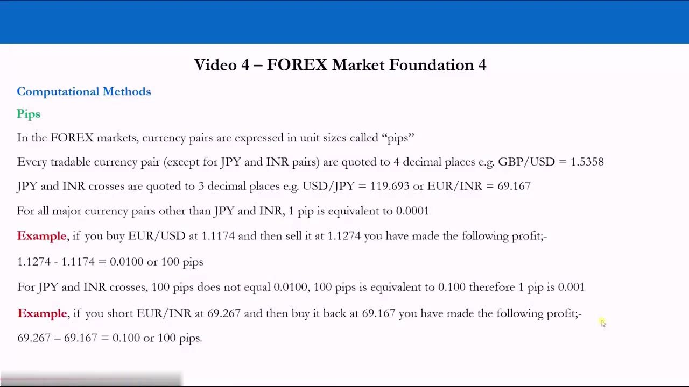
Percentages and basis points: how pips mask the true move
- Retail brokers push everything in pips because it masquerades the true moves in forex — it isn't a transferable, comparable metric like a percentage.
- EUR/USD +100 pips (1.1174→1.1274) = (1.1274 − 1.1174)/1.1174 × 100 = 0.895% = 89.5 basis points.
- USD/INR −100 pips (69.267→69.167) = (69.267 − 69.167)/69.267 × 100 = 0.144% = 14.4 basis points. Same 100 pips, a much bigger EUR/USD move.
- So 1 pip in EUR/USD ≈ 0.00895 ≈ 1 basis point; 1 pip in USD/INR ≈ 0.0014436 ≈ 1.44 basis points. A basis point = 1/100th of 1% (1% = 100 bp).
- 'The Rupee fell 100 pips' sounds far more impressive than 'the Rupee fell one one-hundredth of a percent' — that framing serves the broker's conflict of interest, not you.
This is the chapter's core message: opportunity and risk must be assessed in base metrics — percentages and basis points — because only they put every pair on a level playing field. Professional traders and hedge fund managers never assess volatility in pips.
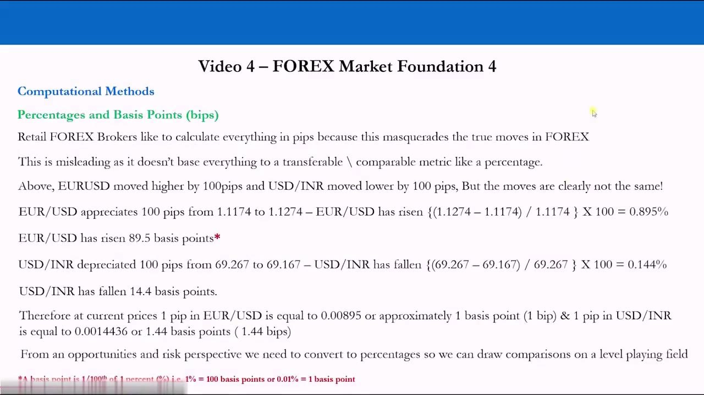
Trading sizes: lots, mini, micro, nano
- Sizes vary by platform and instrument (spot, future, CFD, spread bet) but are universally broken into standard units.
- 1 Lot = 100,000; 1 Mini Lot = 10,000; 1 Micro Lot = 1,000; 1 Nano Lot = 100 currency pairs.
- Nano lots are common in the UK, Europe and Asia, less so in the US; a broker's own 'contract size' may vary, so verify it.
- Retail traders mostly deal in mini, micro and nano lots — full lots are really for institutional traders at banks and hedge funds.
These are the standard language of size across the industry. Getting them right is not pedantry: mistaking a mini lot for a lot means 10× the intended exposure, a dangerous error in a fast, losing market.
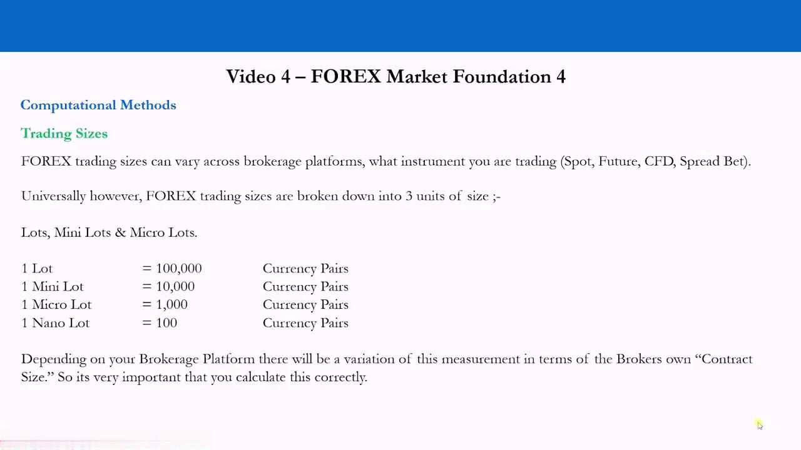
Working out contract size from the broker's pip value
- The easiest way to find contract size is the pip value next to the quote, e.g. 'EUR/USD (per 0.0001)': 1 ÷ 0.0001 = 10,000 EUR = 1 Mini Lot.
- Bid/ask 1.10355 – 1.10365 is a 1-pip spread; buying 1 contract buys EUR and sells USD at 1.10365. EUR10,000 × 1.10365 = $11,036.50.
- Nano-lot example: 'USD/JPY (per 0.01)': 1 ÷ 0.01 = 100 USD = 1 Nano Lot; USD100 × 119.975 = JPY 11,997.50.
- Trading size is always the amount of the LEFT (base) currency bought/sold; exposure and P&L are always expressed in the RIGHT (quote) currency.
Miscalculating the pip value is how a trader intending EUR50,000 (5 mini lots) can accidentally trade EUR500,000 (5 lots) — 10× exposure. In a fast, losing market you may not even notice before it goes badly against you.
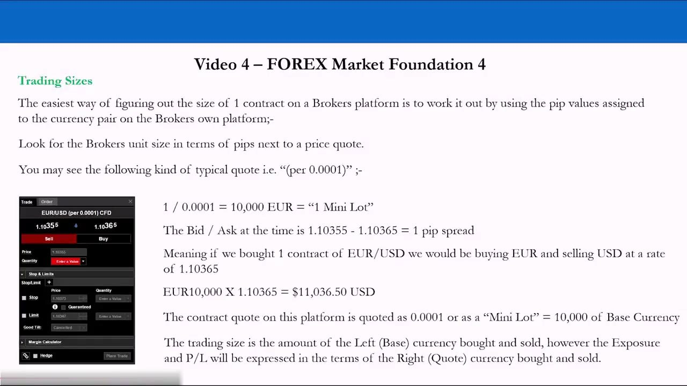
Margin, leverage, exposure — and why forex is over-lent
- Brokers lend far more against forex than indices, stocks, commodities, ETFs or rates products, because major FX pairs have LOWER volatility and HIGHER liquidity over any period — so it is less risky to lend, and they maximise spread, financing and OTC gain.
- Thought experiment: an asset quoted 1.2277 – 1.2278 (1-pip spread) that trades only twice a day, forever — you cannot make money from it no matter how much capital you throw at it, because it doesn't move.
- Lower opportunity and risk per unit of capital deployed is exactly what makes forex the asset class brokers push you to over-leverage.
The over-lending is not generosity — it is a direct consequence of forex's low volatility and high liquidity, which is precisely why the broker can afford the risk and profit most when you trade big and often.
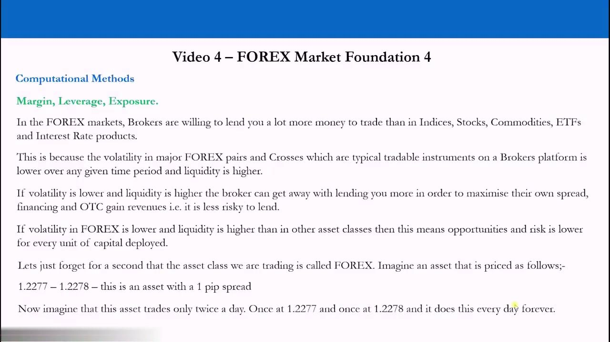
Leverage doesn't create volatility — it only levers your P&L
- If a pair's daily historical volatility is 60 pips, borrowing to trade it does NOT make it move more — the exchange rate is set by the market.
- Leverage 'leverages volatility that doesn't exist to give the illusion that it does'. It increases the volatility of your P&L, not of the asset.
- Historically forex moves less than every other asset class over all time periods; high borrowing changes none of that.
- Anyone who tells you otherwise is 'either a liar or an idiot' and most probably has a conflict of interest.
This is the anchor of common sense the chapter keeps returning to: a low margin requirement does not create opportunity. Only the asset's own volatility does — and forex has the least of it.
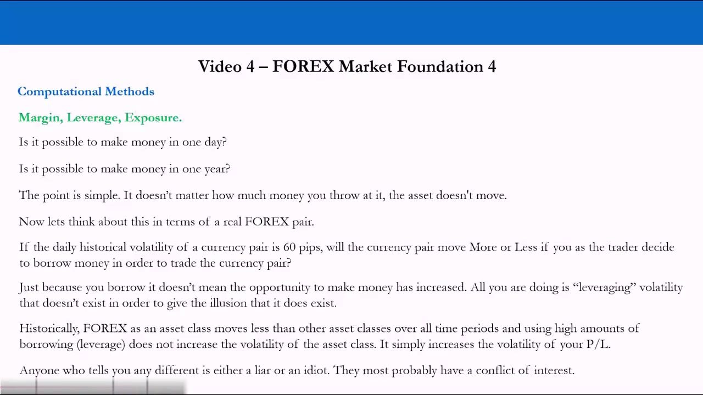
Initial margin, variation margin and the margin call
- US/Canada margin requirements can be ~2% (and vary widely); Europe/Asia-Pac typically 1%. At 1%, GBP1,000 initial margin borrows GBP100,000 to trade 1 lot of GBP/USD — you are 100× leveraged.
- GBP/USD up 1% → +GBP1,000 = +100% on initial margin; down 1% → −GBP1,000 = −100%, wiped out.
- Variation margin = the difference between your initial margin and current P&L; a profit credits your account, a loss debits it.
- When variation margin exceeds initial margin you get a margin call — deposit more or the broker closes you out automatically.
- Note the tell: brokers set margin requirements as PERCENTAGES (1% for liquid/less volatile up to 5% for less liquid/more volatile), managing their own risk in percentage terms while pushing you to think in pips.
The broker measures its own risk and opportunity in percentages — the same base metric it discourages you from using. If pips were the important measure, they would set lending limits in pips; they don't, because thousands of clients who can't calculate risk correctly is a perfect situation for them.
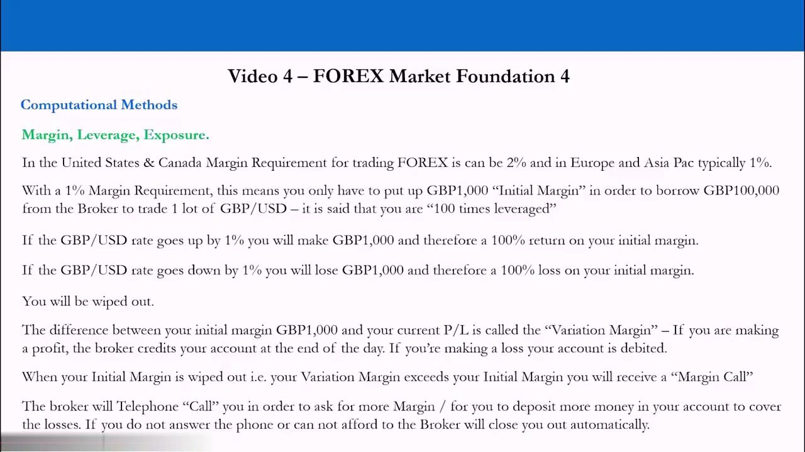
Gross exposure is your real risk — choose it yourself
- What matters is gross exposure and the volatility of what you hold — just like stocks: 1,000 Apple shares at $125 = $125,000 exposure; −1% = −$1,250.
- Same for FX: buy 5 Mini Lots of EUR/USD at 1.10365 = BUY EUR50,000 / SELL $55,178.
- A 1% margin requirement means you COULD post just EUR500 — but you don't have to. Put EUR25,000 in and you have chosen 2× exposure (a 50% self-imposed margin requirement).
- It is in the broker's interest that you get stopped out often (more trades, more commission). Fund the account well, pick your own exposure, and you may choose NEVER to be stopped out.
- Risk isn't how much you can borrow; risk is the gross exposure you carry.
The professional move is to invert the broker's incentive: decide your own gross exposure and put real capital behind it, so that a normal move in the pair can't wipe you out — the opposite of the small-account, max-leverage retail default.
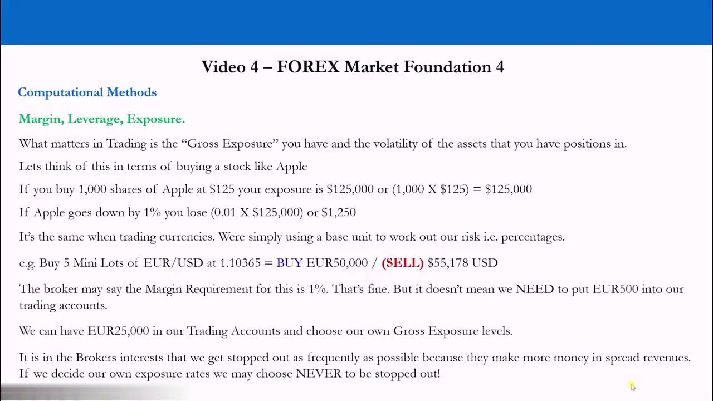
P&L method 1 — base and cents
- Buy 1 Lot EUR/USD at 1.10356 = BUY EUR100,000 / SELL $110,356.
- Move to 1.12479 → profit = 100,000 (base) × (1.12479 − 1.10356) = $2,123.
- P&L is always expressed in the RIGHT (quote) currency.
- If the account is denominated in the base (EUR), convert at the current rate: $2,123 ÷ 1.12479 = EUR1,887.
The most direct method: base amount times the price change, always landing in the quote currency, then converted back to the account currency if needed.
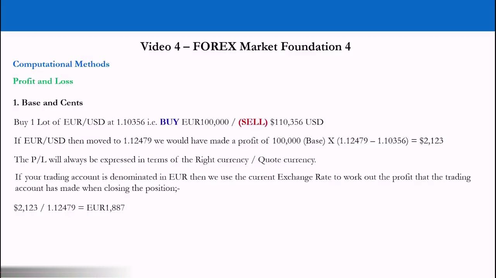
P&L method 2 — pips and pip value
- Pip Value = 1 Pip × Trading Size, in the quote currency. Fix the broker's pip value and multiply across sizes.
- GBP/USD at 1 pip = 0.0001: Lot = 0.0001 × 100,000 = $10; Mini = $1; Micro = $0.10; Nano = $0.01 per pip.
- GBP/USD worked P&L: buy 1 Lot at 1.52518, sell at 1.54622 → (difference) ÷ 0.0001 = 210 pips × $10 = $2,100 (= GBP1,358 at 1.54622).
- USD/JPY (1 pip = 0.01): 1 Lot pip value = 0.01 × 100,000 = JPY1,000. Buy at 119.975, sell at 121.663 → (121.663 − 119.975)/0.01 = 168 → 169 pips × JPY1,000 = JPY169,000 = $1,389.
Anchor to the broker's own pip value and multiply it across the size table — the method applies on virtually any platform, always giving the pip value in the quote currency.
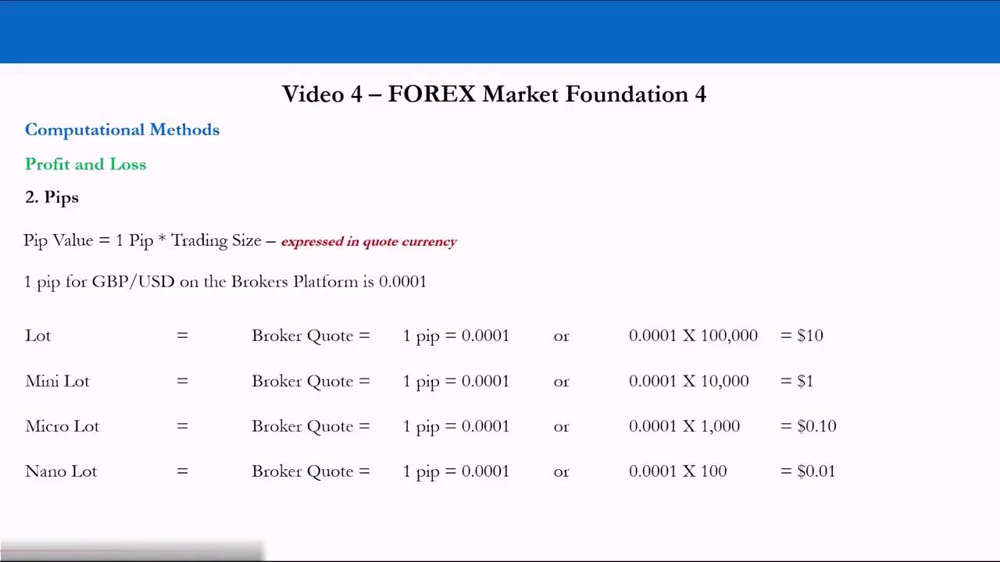
P&L method 3 — percentages and basis points
- You don't even need the pip value — just the move in percentage terms. USD/JPY 119.975→121.663 = 169 pips.
- {1.690 (169 pips) ÷ 119.975} × 100 = 1.40%; or $100,000 × 0.014 = $1,400 — essentially the same as the $1,389 from the pip method.
- All three methods reach the same answer, but percentages let you compare this opportunity and risk against every other pair.
- Get in the habit of double-checking everything in percentages and basis points — a big pip count is often not a big return, especially when day trading.
Whichever method you prefer, always verify in percentages and basis points — it gives a true appreciation of the move and is the language volatility (and every cross-pair comparison) is measured in.
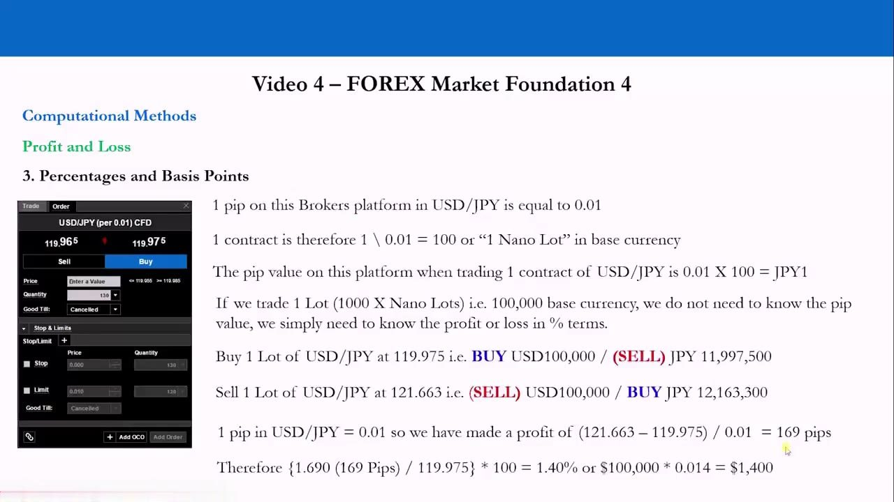
Carry and rollover — the mechanics
- Every FX position is automatically long one currency financed by shorting another — you cannot buy a currency without first selling one.
- The carry trade: borrow (short) a low-yielding currency and lend (go long) a high-yielding one. You pay the lending rate on the short (liability) and receive the deposit rate on the long (asset).
- You receive LESS on a long than you pay on a short of the same currency, because the deposit rate is below the lending rate — the same spread a high-street bank charges between savings and loans.
- Objective: short the currency whose country rate is LOWER (liability) than the currency you go long (asset).
Carry falls straight out of the fact that a currency position is a simultaneous borrow-and-lend. Each side has an interest rate; the difference between what you receive and what you pay is the carry.
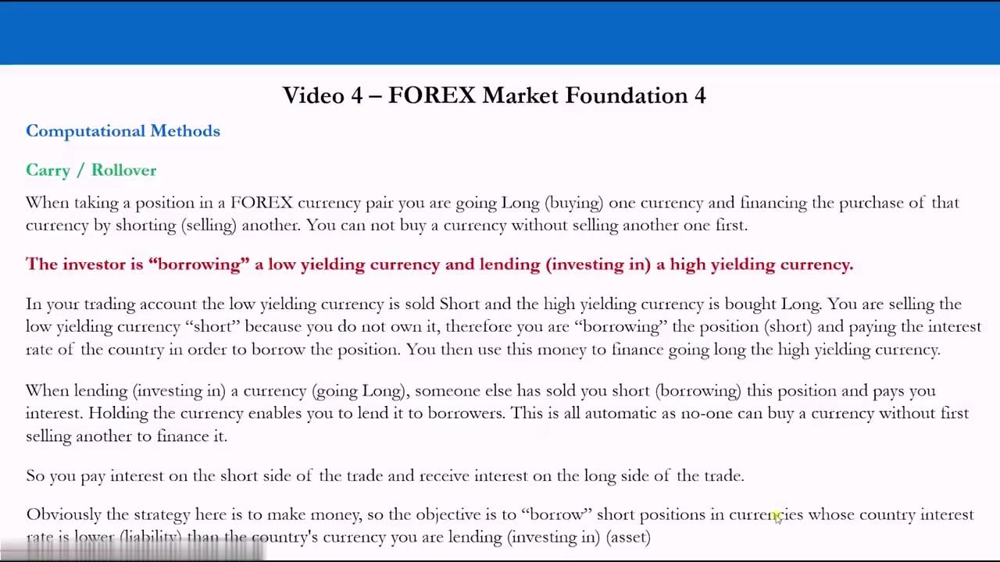
Positive vs negative carry, and the rollover table
- Positive carry = a credit (you receive more than you pay); negative carry = a debit (you pay more than you receive). The daily credit/debit is called ROLLOVER.
- Worked table (365 days, rate 0.94512): Currency A deposit 1% / lending 4%; Currency B deposit 7% / lending 12%.
- Long A / Short B differential = 1% − 12% = −11% per year (negative carry). Long B / Short A = +3% per year (positive carry).
- Per 1 Lot (100,000): Long A/B pays −11,000/yr = −31.89 per day; Short A/B receives +3,000/yr = +8.70 per day. Mini/micro/nano scale down 10×/100×/1000×.
The annual differential and its daily rollover flip sign depending on which way you take the pair. Being long the wrong side means paying out every single day whether or not the pair moves.
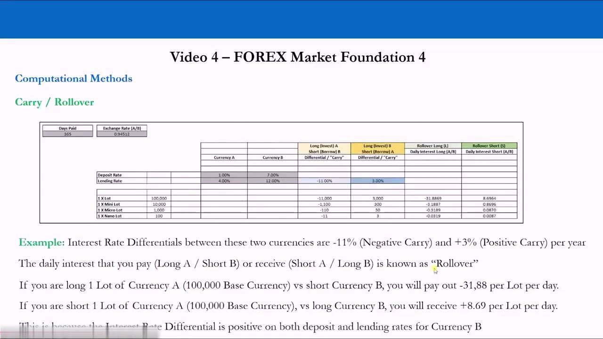
Carry meets leverage — the danger multiplies
- Brokers must publish daily rollover rates (platform, website, or emailed PDF) — they are indicative of base rates / interbank offer rates in the countries concerned.
- The base table assumes no leverage. Levering the same position scales the daily rollover with exposure: with $10,000 margin, Short A/B ranges from +173.93/day at 0.5% margin (20× leverage, $2m exposure) down to +0.97/day at 90% margin.
- With $30,000 margin, 0.5% margin req = 200× leverage = $6m exposure = 100 lots; Long A/B bleeds −1,913.22/day, Short A/B earns +521.79/day.
- Warning: if 1 contract is at or above 5× leverage (20% margin requirement), the pair's volatility can wipe you out — the safe zone is heavier margin (self-imposed exposure in the 10–30% range).
The same principle as margin/volatility applies to carry: leverage a positive carry deliberately, never leverage a negative one by accident. A levered negative carry eats your margin daily even if the pair never moves.
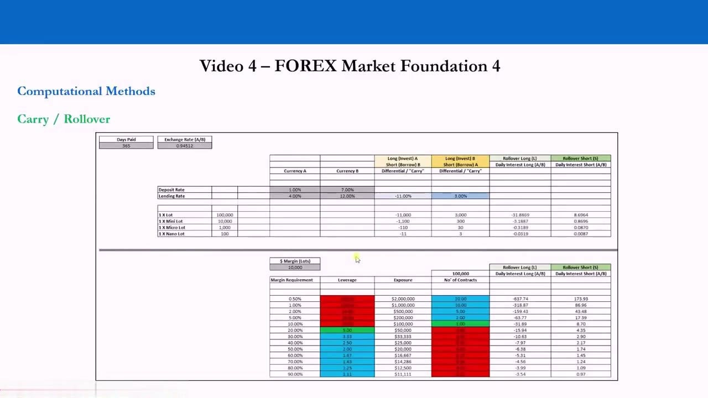
The amateur mistakes carry exposes
- More leverage doesn't mean more volatility in the asset — utilised margin is fixed by the broker; leverage only inflates P&L volatility. A low margin requirement does not create opportunity.
- Many retail traders don't even know positive/negative carry exists. They can call the direction of a pair correctly for weeks yet make nothing, because the negative carry pays out as much per day as the move earns.
- They sit staring at the screen wondering why they aren't making money; then the pair turns, the small account gets a margin call, and they are wiped out.
- Under-funding the account and taking all available leverage is 'blatant greed' — and exactly the dumb-money behaviour brokers and educators prefer.
Carry is where the whole chapter's warnings converge: this is a large part of why 90% of retail traders lose 90% of their money in 90 days — negative carry, high leverage, and a direction called wrong.
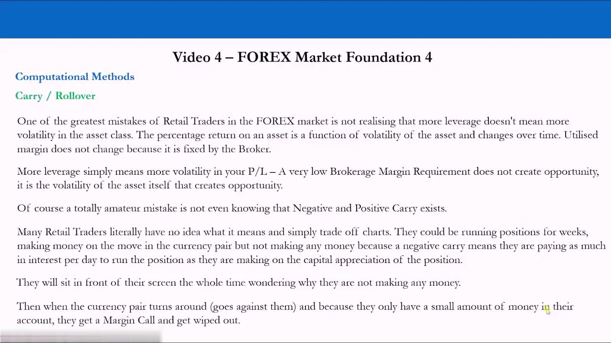
Interest-rate expectations, EMH and hot money
- Brokers and educators dislike traders who go medium-to-long term in small-to-medium size for positive carry; they prefer day trading in and out (before interest), in the biggest size, to harvest volume, spread, financing turn and OTC gain.
- Efficient Markets Hypothesis says all interest-rate information is already discounted into cross prices — implying no positive-carry opportunity — which is 'actually nonsense', as positive-carry trades are among the most popular at institutional level.
- It is CHANGES (shocks) in interest-rate expectations that create hot-money speculative flows: money flows toward positive carry when differentials are expected to widen, and out of negative carry when they narrow.
- So it is not the static snapshot of rates but the expected direction and speed of the differential that drives the big medium-to-longer-term opportunities — a theme returned to in trade-idea generation later.
The static carry mechanics are the foundation; the real driver of volatility and opportunity is the expectation of how interest-rate differentials will change, which is where speculative capital actually moves.
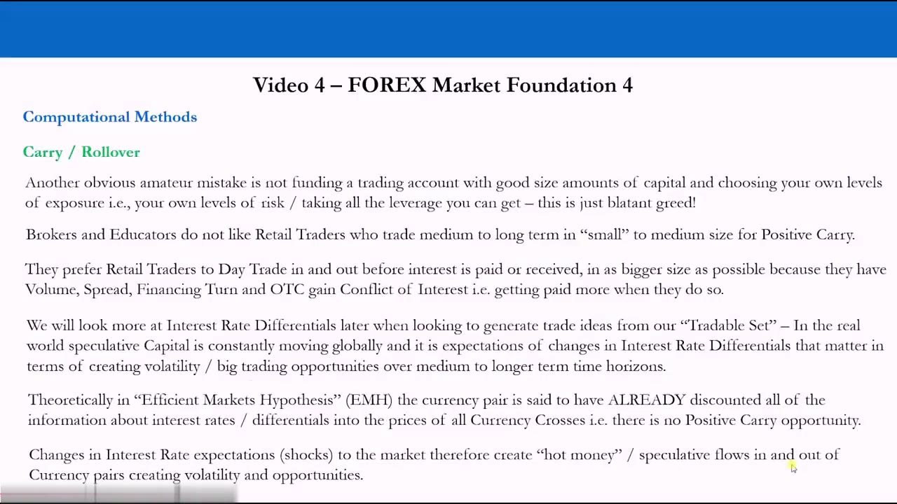
Recap: seven basic computational methods
- Left-to-Right Convention · Pips · Percentages & Basis Points · Trading Sizes · Margin, Leverage & Exposure · Profit and Loss · Carry and Rollover.
- These link back to opportunity set and regimes (videos 1–2) because measuring volatility requires this rigour, and to infrastructure (video 3) because the pros compute far beyond what retail does.
- They are called 'basic' only relative to the professionals who go much further — the mathematical rigour is itself what separates pros from retail in a competitive product AND labour market.
- Video 5 moves on to ADVANCED computational methods — heavier spreadsheet work, but a rinse-and-repeat process that applies across forex and multiple asset classes.
The seven methods are the deterministic toolkit a professional calls upon; mastering them is the price of entry, not the strategy itself. Next comes the volatility work these foundations were built to support.
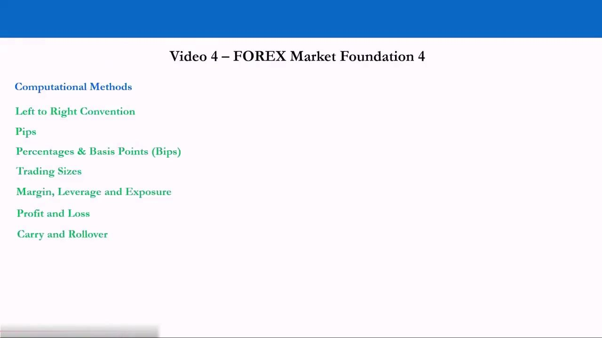
Glossary
- Base currencyThe currency on the LEFT of a pair; the quote tells you how much of the quote currency one unit of the base buys. In USD/JPY, USD is the base.
- Quote currencyThe currency on the RIGHT of a pair; exposure and P&L are always expressed in it. In USD/JPY, JPY is the quote.
- Cross rateA pair derived from two dollar crosses. When the common currency is numerator/denominator across the two you multiply (AUD/JPY = USD/JPY × AUD/USD = 93.547); when it's the denominator in both you divide.
- PipThe unit size of a currency pair: 0.0001 for majors (4 decimals), 0.001 for JPY and INR pairs (3 decimals). 100 pips in EUR/USD = 0.0100.
- Basis point (bip)1/100th of one percent; 1% = 100 basis points. The base metric pros use to compare pairs, because pips mask true percentage moves.
- Lot sizes1 Lot = 100,000, 1 Mini Lot = 10,000, 1 Micro Lot = 1,000, 1 Nano Lot = 100 currency pairs (of the base currency).
- Pip value1 Pip × Trading Size, expressed in the quote currency. GBP/USD 1 Lot = 0.0001 × 100,000 = $10 per pip.
- Margin requirementThe percentage of exposure a broker requires as collateral. 1% = 100× leverage. Brokers set it by volatility/liquidity, typically 1% (liquid) to 5% (less liquid).
- Leverage1 ÷ margin requirement. It magnifies the volatility of your P&L, not of the asset — a pair moves the same whether or not you borrow.
- Gross exposureThe full notional value of your positions (base amount × rate) — your real risk. What matters, not how much the broker will lend you.
- Initial / variation margin & margin callInitial margin is the collateral posted; variation margin is the running difference vs current P&L; a margin call is the demand for more funds (or auto-close) when losses exceed initial margin.
- CarryThe net interest on a position: you receive the deposit rate on the long (asset) and pay the lending rate on the short (liability). A credit is positive carry, a debit is negative carry.
- RolloverThe daily credit or debit of carry to your account, published by the broker. E.g. 1 Lot Long A/B pays −31.89/day; Short A/B receives +8.70/day.
- Efficient Markets Hypothesis (EMH)The theory that all rate information is already discounted into cross prices, implying no positive-carry edge — dismissed in the lesson, since it is expected CHANGES in differentials that drive hot-money flows.